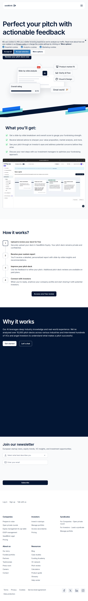
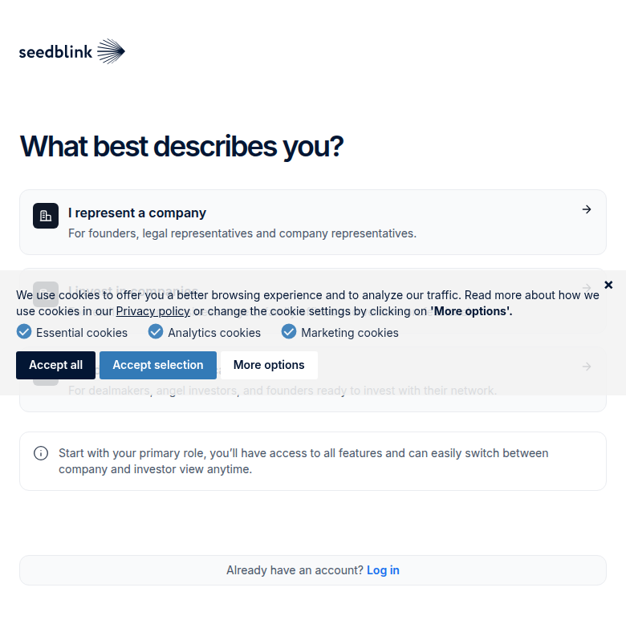
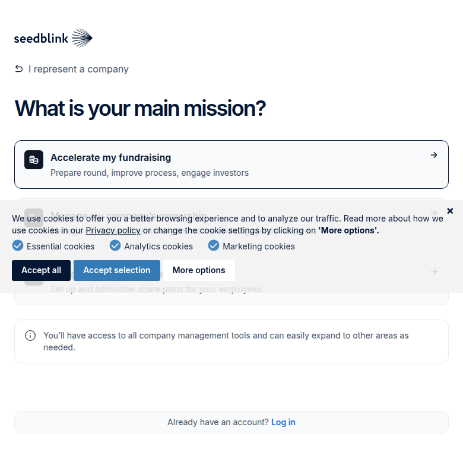
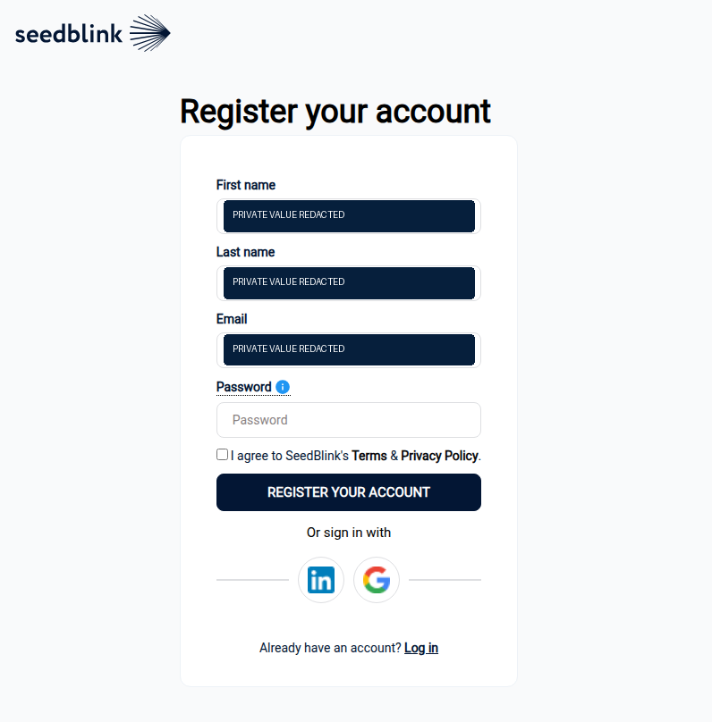
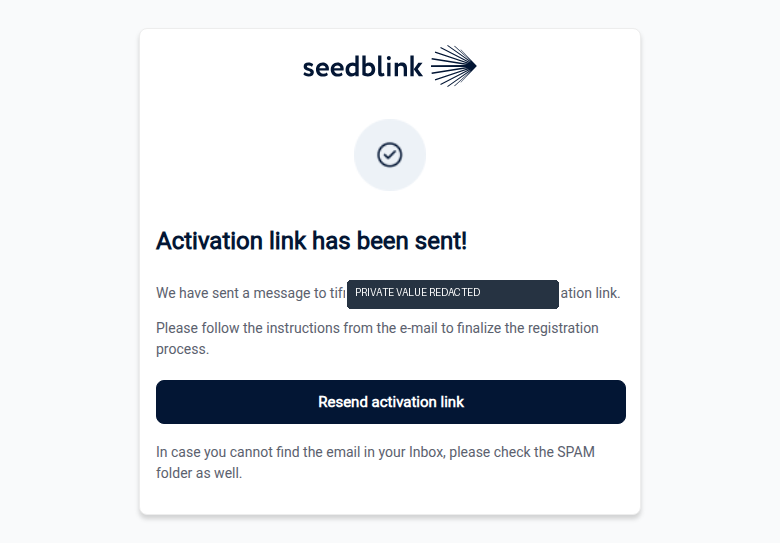
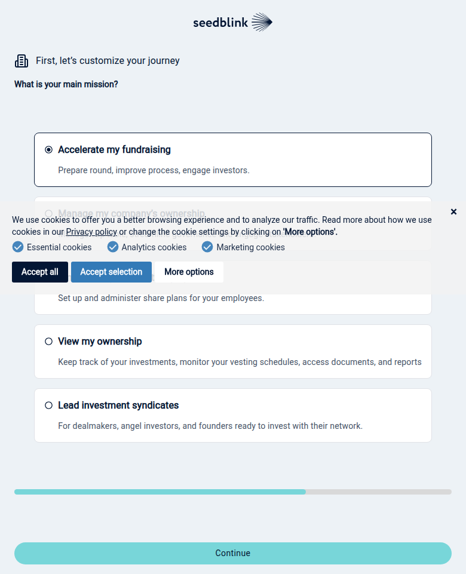

Profile
- Company
- SeedBlink
- Url
- https://seedblink.com/pitch-deck-review
- Source Category
- AI pitch-deck reviewers
- Research Status
- Deep Cited Research / Draft Complete
- Current Status
- live - fetched https://seedblink.com/pitch-deck-review directly on 2026-07-19, HTTP 200; SeedBlink is an established, actively operating European venture platform (not just a deck tool) with an active press room and product suite.
- Founded Launch Year
- Founded/launched late 2019 (platform launched December 2019) by former bankers Andrei Dudoiu and Ionuț Pătrăhău, later joined by Carmen Sebe and Radu Georgescu. Source: therecursive.com interview with CEO Andrei Dudoiu; eu-startups.com.
- Company Age
- ~7 years (as of 2026)
- Hq Country
- Romania - Bucharest
- Operating Area
- Europe-wide - 'Europe's Venture Deal Execution Platform'; blog covers 'European tech landscape'
- Target Users
- European startup founders raising private rounds; individual and institutional investors; syndicate leads/LPs
- Product Category
- founder-investor / capital (equity crowdfunding + private round execution); cap table & equity management; ESOP management; AI pitch/deck review (free tool); secondaries marketplace
Product Flows
- Swipe Card Interface
- not found / no evidence of swipe UI; investor discovery is via a searchable 'Explore 100+ company profiles' directory and a 'VC network' tool
- Mutual Match
- not found / no public source
- Ai Matching Scoring
- yes - CORE investor-fit scores
- Ai Deck Scoring
- yes - AI deck review/fundraising assistant
- Founder To Founder Flow
- not found / no evidence of a founder-to-founder networking feature
- Founder To Investor Flow
- yes
- Project Profiles
- yes - Spotlight profile/view tracking
- Messaging Collaboration
- yes - investor updates
- Mobile App
- not found / no App Store/Google Play listing located
- Web App
- yes
Security & Documents
- Nda Gated Unlock
- not found / no explicit NDA-gate described; deck review is described as 'private and confidential' but not as an NDA-unlock mechanism prior to viewing
- Data Room
- yes - secure private data room
- E Signature
- yes (per original pass; plausible given SeedBlink executes real private funding rounds and legal paperwork via 'SeedBlink Legal', not independently re-confirmed as a discrete e-sign feature in this pass)
- Meeting Prep Ai Briefing
- yes - fundraising assistant
Pricing, Funding & Traction
- Pricing Model
- Freemium: one free pitch deck review, additional reviews on paid plans; broader platform uses 'Customized pricing plans tailored to every growth stage' for companies and 'Flexible pricing options' for investors/syndicates (not itemized on scraped page)
- Business Model
- Marketplace/fintech model: fees on facilitated investment rounds (equity crowdfunding/private rounds), plus SaaS-style subscription for cap table/ESOP/equity management tools and syndicate infrastructure
- Total Funding
- SeedBlink itself (as a company) has raised a total of $4.89M across 2 disclosed rounds per Crunchbase-derived search result, including a €3M Series A in May 2021 (of which €1.1M was crowdfunded on its own platform - the largest such round in Romania at the time) and an earlier €1.2M from Catalyst Romania Fund II in 2020
- Funding Rounds
- 2020: €1.2M (Catalyst Romania Fund II); May 2021: €3M Series A (incl. €1.1M crowdfunded via SeedBlink's own platform)
- Investors
- Catalyst Romania (Fund II), plus retail/crowd investors via SeedBlink's own platform for part of the Series A
- Funding Source Type
- VC + equity crowdfunding (own platform)
- Last Funding Date
- May 2021 (most recent round found; more recent rounds may exist but were not located in this research pass)
- Users Traction
- Platform (not just the deck tool) has 'mobilized hundreds of millions in investments for over 250 companies' and reports 'half a billion euros invested' cumulatively (per Crowdinform/company claims); '100+ company profiles' currently browsable
- Deals Funding Facilitated
- Hundreds of millions of euros facilitated across 250+ companies (company/secondary-source claim, order-of-magnitude, not itemized per-deal)
- Partnerships
- not found / no specific named partners beyond investor network (VC network tool); Catalyst Romania as an investor-partner
- Media Coverage
- bne IntelliNews (intellinews.com) - 'Romania's SeedBlink crowdfunding platform to raise funds for European expansion'; EU-Startups - 'Bucharest-based SeedBlink nabs €3 million...'; ITKeyMedia; therecursive.com CEO interview
- Product Update Activity
- active - ongoing product suite expansion including 'SeedBlink Legal' (described as new: 'From term sheets to exit') and continuously updated blog/Funding Academy content
- Acquisition Rebrand History
- not found / no evidence of acquisition or rebrand
Scores
- Product Overlap Score
- 3
- Feature Maturity Score
- 5
- Market Traction Score
- 4
- Funding Strength Score
- 3
- Ai Depth Score
- 2
- Nda Security Strength Score
- 2
- Network Moat Score
- 5
- Direct Threat Score
- 3.5
- Source Confidence
- High
Evidence Notes
- Primary Sources
- https://seedblink.com/pitch-deck-review
https://seedblink.com/
https://seedblink.com/press-room/2021-05-27-seedblink-received-funding-in-record-time-to-expand-in-europe
https://seedblink.com/press-room/2021-06-02-interview-with-andrei-dudoiu-ceo-of-seedblink-for-the-recursive
https://seedblink.com/core-investor-matching
https://seedblink.com/pricing - Secondary Sources
- https://www.eu-startups.com/2021/05/bucharest-based-seedblink-nabs-e3-million-with-e1-1-million-from-its-own-crowdfunding-platform/
https://www.intellinews.com/romania-s-seedblink-crowdfunding-platform-to-raise-funds-for-european-expansion-211490/
https://itkey.media/seedblink-raises-eur-1-1m-on-its-own-crowdfunding-platform-in-series-a/
https://www.crunchbase.com/organization/seedblink
https://crowdinform.com/en/crowdfunding-platforms/seedblink - Unsupported Claims
- 'Half a billion euros invested' and 'hundreds of millions mobilized for 250+ companies' are company-published cumulative claims not independently line-item verified.
- Contradictions
- None found; funding figures are broadly consistent across EU-Startups, ITKeyMedia and CEO interview sources.
- Last Checked
- 2026-07-19
- Notes
- SeedBlink is the most mature, best-funded, and most institutionally real company in this batch - it is a full European venture/equity platform where the AI pitch-deck reviewer is a top-of-funnel lead-gen tool feeding a genuine investor-connection and capital-raising pipeline (closest functional analog to BizMatch's Founder<->Investor path with real transactional weight behind it). It is not a swipe-based or NDA-gated app, but its network moat (250+ funded companies, syndicates, own capital infrastructure) is the strongest in the batch.
Registration Flow
Research date: 2026-07-19. Screenshots are sanitized and omit any credentials or tokens.
Outcome: company/fundraising registration completed and email verification completed for the research account.
Stop point: first onboarding mission-selection screen. No fundraising application, company profile, campaign, investment, or paid action was submitted.
- Opened SeedBlink and selected the sign-up path, then chose the "I represent a company" role.
- Selected "Accelerate my fundraising" as the main mission on the pre-account goal-picker screen.
- Reached the actual account-creation form, which requests first name, last name, email, and password, with LinkedIn and Google as alternate sign-in/sign-up options. Created the research account with sanitized details and completed Gmail email verification.
- Reached onboarding mission selection (goal picker shown again, post-verification) and stopped before submitting any fundraising application data.





